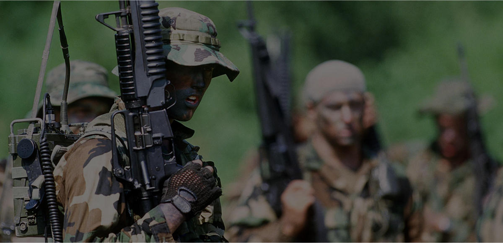

Wolfpack Bootcamp Training Missions
Train your special operations skill with three Wolfpack Training Missions

About WTT
The Wolfpack WarmUp Testing & Training (WTT) mission was requested by several communities and was added to volume 1 & 2 since version 1.55. The WTT mission differs slightly from the rest of the Wolfpack missions as it offers respawn of players ((30 seconds) and equipment (5 minutes). This mission can be joined whilst in progress (JIP enabled).
Challenges / Side-Missions
Easy Difficulty
- Pefkas Observation Post - Take full control of the observation post.
- AA-Site - Neutralize the ZSU-39.
- Alpha Patrol - Go on a recon patrol and follow waypoints Alpha 1 thru 7.
Medium Difficulty
- Pefkas Base - Assault & control the base and its surrounding CP's.
- Artillery Base - Destroy all three 2S9 Sochor's.
- Iraklia Resort - Eliminate a CSAT Colonel at the old Iraklia Resort.
- Bravo Patrol - Go on a LR patrol and follow waypoints Bravo 1 thru 11.
Hard Difficulty
- Heliport - Destroy all CSAT air assets.
- Fuel Depot - Secure the fuel depot. Destroy all CSAT assets.
- Rodopoli - Destroy the communication station
- Paros - Neutralize a Supply Convoy (stationary)
Wolfpack WTT features
- Warmup for a game event.
- Train your recon and covert operations skills.
- Test the mods required for the Wolfpack mission(s).
- 11 challenges/objectives - easy / medium / hard.
- JIP compatible.
- 30 secs respawn.